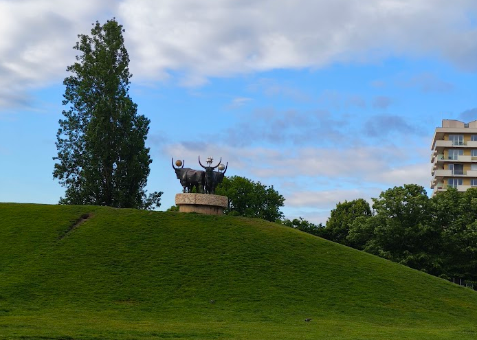
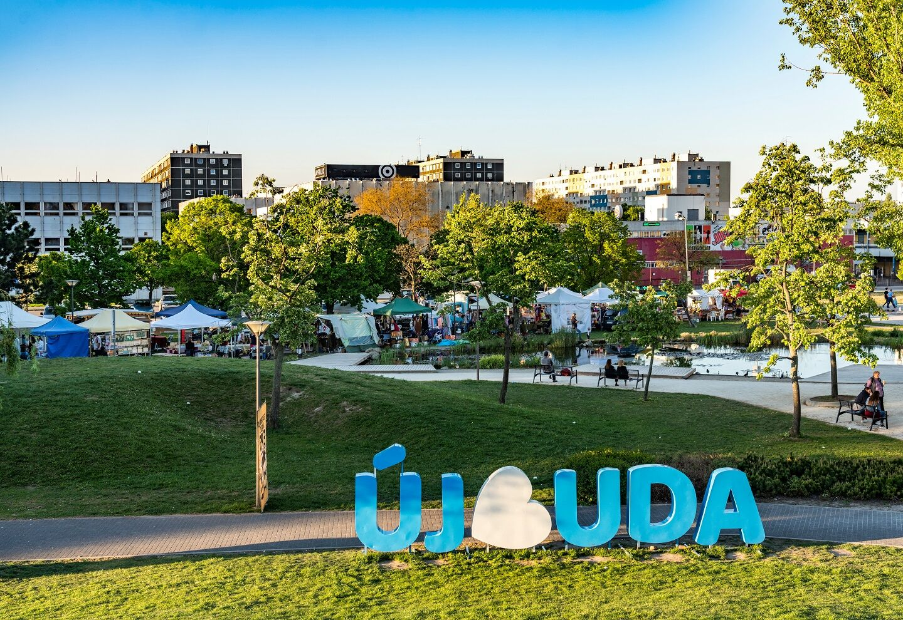
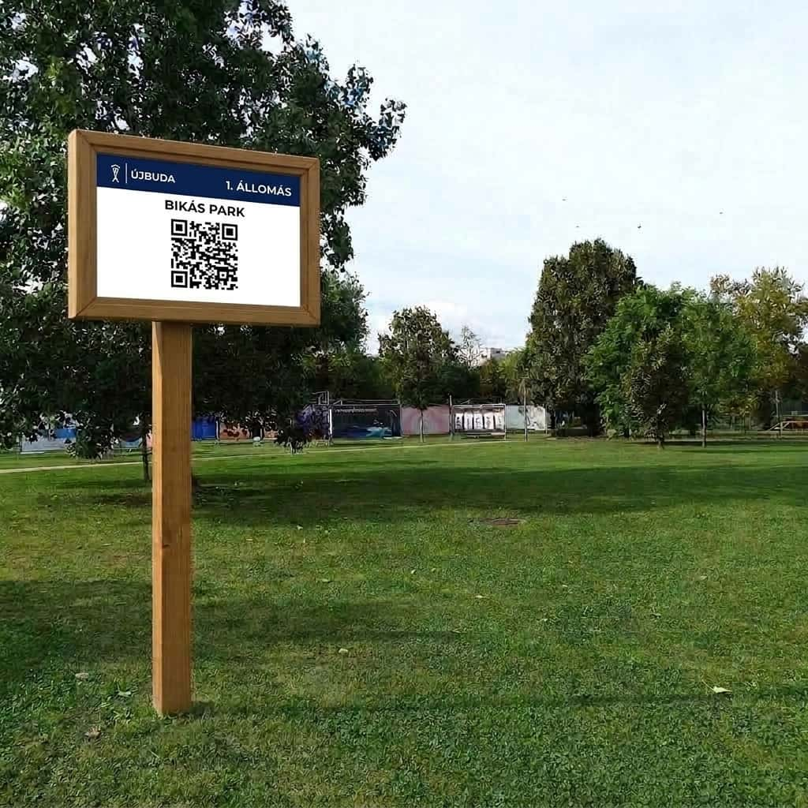

Híd a képernyő és a szabadban töltött idő között: passzív görgetés helyett felfedezés, mozgás és értékes tartalom.
A fiatalok ma idejük nagy részét a képernyők előtt töltik. A Bikás Park Felfedező nem harcol a okostelefonok ellen, hanem szövetségesül hívja őket. A kijelzőt a fizikai aktivitás és a játékos ismeretterjesztés eszközévé formálja.

A Bikás Park Felfedező egy szabadtéri, interaktív kódvadászat, ahol a játékosok a parkban kihelyezett QR-állomásokat felkutatva gyűjthetik össze a digitális albumuk hiányzó darabjait.
Az interaktív térkép és a pontos instrukciók segítségével megkeresik a kihelyezett QR-kódokat.
A kódok beolvasásával az adott képhez kapcsolódó, ismeretterjesztő kvízkérdéseket oldanak meg.
A sikeresen teljesített állomásokért járó puzzle-darabkákból összeállítják a teljes képet, amely bekerül a saját, folyamatosan bővülő digitális albumukba.
A fizikai mozgást és a játékos tanulást ötvözve minél több állomást teljesíteni, és hiánytalanul kirakni a teljes digitális gyűjteményt.
Az alábbi QR-kód a Bikás Park Felfedező működő demóváltozatához vezet. Nincs szükség applikáció letöltésére, a telefon kamerájával azonnal indítható a játék.
Tapasztalja meg a QR-beolvasást, Taurus segítségét, a kvízeket és
a puzzle-élményt közvetlenül az okostelefonján.
A demó verzióban nem kell a qr-kódot beolvasni. Elég, ha a
"sikeres beolvasás szimulálása" gombra kattint.
A kihelyezett QR-kódok nem egyetlen játékhoz kötött statikus pontok, hanem egy folyamatosan újrahasznosítható digitális infrastruktúrát képeznek. A fizikai állomások megtartásával a háttértartalom bármikor frissíthető, így a platform hosszú távon is változatos kerületi programok, oktatási versenyek és szezonális kampányok helyszínéül szolgál.

A képernyőidőt értékteremtő szabadtéri mozgássá és játékos tanulássá alakítja a gyermekek számára.
Nincs szükség bonyolult hálózatra vagy hardverre: a park arculatához illeszkedő QR-táblák pillanatok alatt kihelyezhetők.
Újbudai eseményekhez, ünnepekhez (Költészet napja, Halloween, Húsvét stb.) igazított friss tartalom.
Új életet visz a parkba: a tematikus tartalmak nemcsak a kikapcsolódást, hanem az interaktív tanulást és felfedezést is szolgálják.
A Bikás parki sikeres tesztüzem után a koncepció könnyen kiterjeszthető a kerület többi zöldterületére és parkjára is.
Pontos statisztika nyerhető a beolvasások számáról és a látogatási csúcsidőszakokról.